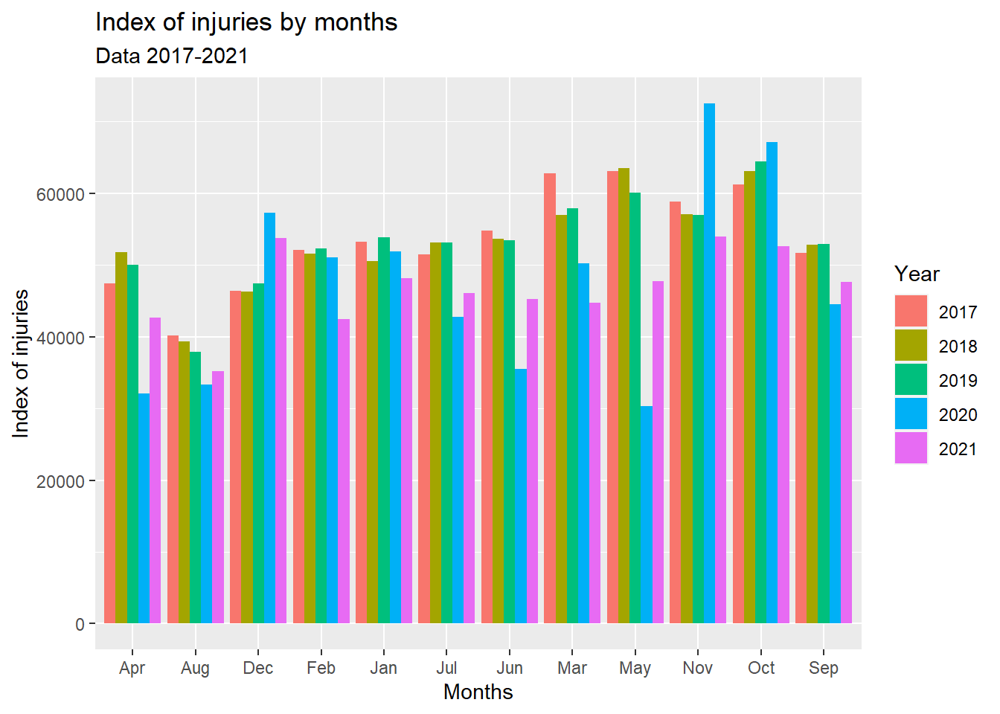
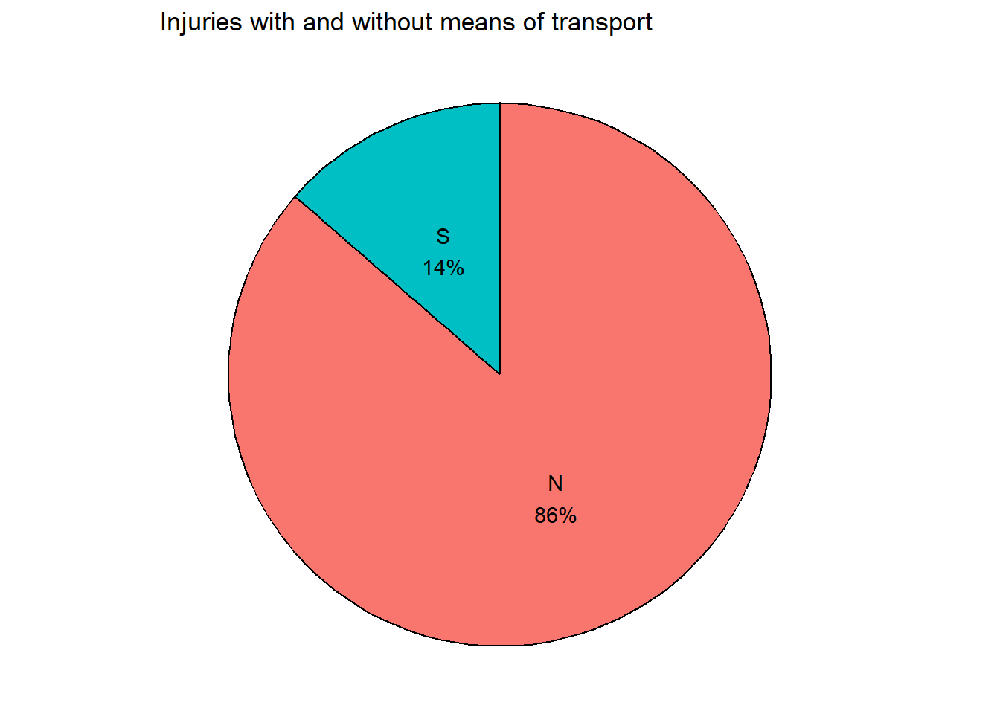
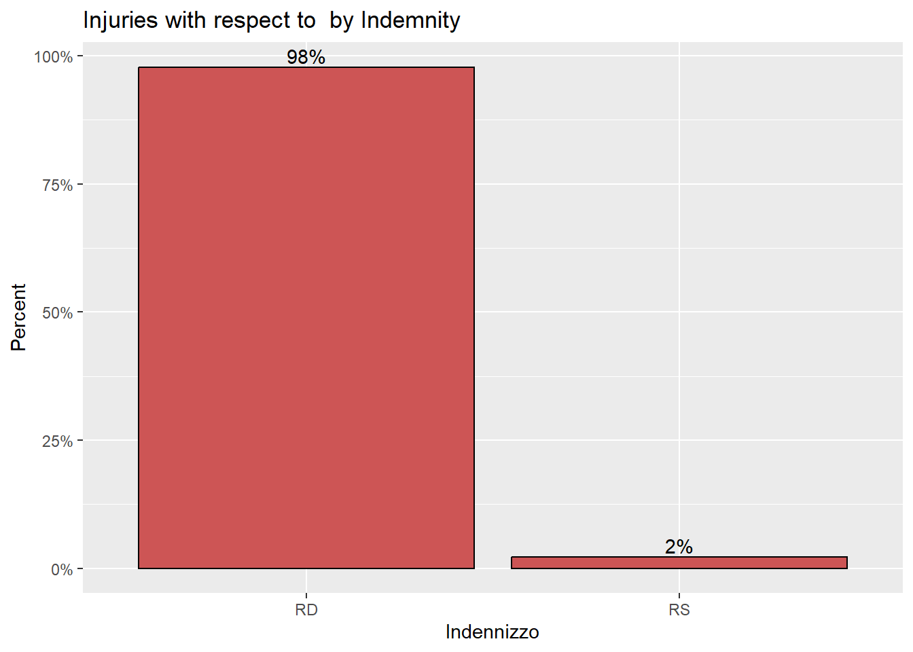

Code
library(accidentr)
library(ggplot2)
library(plotly)
library(dplyr)
library(scales)
library(tidyr)
library(treemapify)
library(reactable)
library(ltm)
library(highcharter)
library(purrr)
library(geojsonio)
library(httr)
library(readxl)In this Report we are going to analyse the dataset Injuries among workers, which represents Six-monthly injuries data across all Italy grouped by “region”, and it is downloadable from INAIL. The first step, we collect the data by region from INAIL website and merge the data into one dataset, the second step we create a package in R for the dataset (accidentr ). The dataset contains 25 variables and 3052056 observations, and the variables are grouped into 7 types as the following:
A - temporal location of the injury:
B - geographical location of the accident:
C - characteristics of the injured person:
date of occurrence, expressed in years of age;D - method of injury:
during work, in itinere);with or without);E - administrative characteristics of the injury:
positive or negative) or the exempt outcome or the preliminary investigation situation;positive or negative) or the situation in investigation;temporary, capital, direct annuity, survivors' annuity);F - medico-legal characteristics of the accident:
G - characteristics of the employer:
agriculture, industry and services, on behalf of the state;industry, crafts, tertiary, other activities;agricultural processing and food,chemical, paper and leather, construction and plant, energy and communications, wood and similar, metals and machinery;rock and glass mining,textiles and packaging, transport and warehouses,various activities).Required Libraries
library(accidentr)
library(ggplot2)
library(plotly)
library(dplyr)
library(scales)
library(tidyr)
library(treemapify)
library(reactable)
library(ltm)
library(highcharter)
library(purrr)
library(geojsonio)
library(httr)
library(readxl)Load the data
data(Ita_Regions)overview of the data
str(Ita_Regions)'data.frame': 3052056 obs. of 25 variables:
$ DataRilevazione : chr "30/04/2022" "30/04/2022" "30/04/2022" "30/04/2022" ...
$ DataProtocollo : chr "11/06/2021" "04/02/2021" "26/09/2019" "11/10/2017" ...
$ DataAccadimento : chr "09/06/2021" "03/02/2021" "23/09/2019" "10/10/2017" ...
$ DataDefinizione : chr "31/01/2022" "14/02/2021" "01/01/1900" "11/10/2017" ...
$ DataMorte : chr "" "" "" "" ...
$ LuogoAccadimento : int 67 66 67 69 69 66 66 69 69 68 ...
$ IdentificativoInfortunato : int 33187926 10447851 4933280 10449679 13961119 19504939 1036005 33187410 33187412 1036919 ...
$ Genere : chr "M" "F" "M" "M" ...
$ Eta : int 33 43 40 37 53 52 48 29 47 50 ...
$ LuogoNascita : chr "ITAL" "ITAL" "ITAL" "ITAL" ...
$ ModalitaAccadimento : chr "S" "N" "N" "N" ...
$ ConSenzaMezzoTrasporto : chr "S" "N" "N" "N" ...
$ IdentificativoCaso : int 23650525 23439310 22509823 20993425 21379343 22530195 21616970 23638357 23638358 22003870 ...
$ DefinizioneAmministrativa : chr "P" "P" "I" "F" ...
$ DefinizioneAmministrativaEsitoMortale: chr "ND" "ND" "ND" "ND" ...
$ Indennizzo : chr "CA" "TE" "NE" "NE" ...
$ DecisioneIstruttoriaEsitoMortale : chr "ND" "ND" "ND" "ND" ...
$ GradoMenomazione : int 8 -1 -1 -1 -1 -1 -1 2 -1 -1 ...
$ GiorniIndennizzati : int 212 6 0 0 70 0 26 61 2 27 ...
$ IdentificativoDatoreLavoro : int 3460730 5826271 3572561 3851335 4438309 -1 6482147 4000839 9632626 9602830 ...
$ PosizioneAssicurativaTerritoriale : int 4387645 3456736 2293098 2356113 4349472 -1 7971583 10155524 11989960 12889950 ...
$ SettoreAttivitaEconomica : chr "M 70" "H 53" "C 25" "C 25" ...
$ Gestione : chr "I" "I" "I" "I" ...
$ GestioneTariffaria : chr "3" "4" "1" "1" ...
$ GrandeGruppoTariffario : chr "0" "0" "6" "6" ...Check for missing values
sapply(Ita_Regions, function(x) sum(is.na(x)))Check for unique values in every columns
sapply(Ita_Regions, function(x) length(unique(x)))Extract the number of accidents everyday
dataACC <- Ita_Regions %>%
count(DataAccadimento) %>%
#summarise(n = sum(n)) %>%
#mutate(dat = as.Date(DataAccadimento, format = "%m/%d/%Y"))
group_by(DataAccadimento)
#dataACCExreact the day, month and year
data2 <- dataACC
data2$Date_Time <- strptime(data2$DataAccadimento, format = "%d/%m/%Y")
data2$Day <- format(data2$Date_Time, "%d")
data2$Month <- format(data2$Date_Time, "%m")
data2$NameMonth <- format(data2$Date_Time, "%b")
data2$Year <- format(data2$Date_Time, "%Y")aggregate number of accidents by year
mydata_total <- data2 %>%
group_by(Year) %>%
summarise(total = sum(n)) %>%
as.data.frame()
write.csv(mydata_total, "index.csv", row.names = FALSE)reactable(
mydata_total,
columns = list(
Year = colDef(name = "Years"),
total= colDef(name = "Total of accidents")
)
)ggplot(mydata_total,
aes(x = Year,
y = total)) +
geom_line(size = 1.5,
color = "lightgrey") +
geom_point(size = 3,
color = "steelblue") +
theme_minimal() +
labs(y = "Number of Accidents (years)",
x = "Year",
title = "Number of injuries over time",
subtitle = "Italy (2017-2021)",
caption = "Source: https://dati.inail.it/opendata/default/Infortuni/index.html")Warning: Using `size` aesthetic for lines was deprecated in ggplot2 3.4.0.
i Please use `linewidth` instead.`geom_line()`: Each group consists of only one observation.
i Do you need to adjust the group aesthetic?
From the graph we can tell that, 2017 has the highest rate of injuries while 2021 has the lowest rate of injuries However, the frequency of injuries has decreased dramatically by -11.18% from 2019 to 2020 and this is quit reasonable due to the pandemic (Covid 19), and the frequent of injuries has declined from 2020 to 2021 by -1.47%. In general, the frequency of injuries is showing a declining trend over thepast 5 years period except the year 2019 there was an increase by 0.081% from the year 2018 to 2019.
Aggregate number of accidents by month spread across the years
mydata <- data2 %>%
group_by(Year, Month, NameMonth) %>%
summarise(total = sum(n)) %>%
spread(key = "Year", value = total) %>%
as.data.frame()`summarise()` has grouped output by 'Year', 'Month'. You can override using the
`.groups` argument.#mydatacolnames(mydata) <- c("Month", "NameMonth", "Year2017", "Year2018", "Year2019",
"Year2020", "Year2021")
write.csv(mydata, "df.csv")
df <- read.csv("df.csv")reactable(
df[,-1]
)colors = c("Year 2017" ="red","Year 2018"= "blue",
"Year 2019" ="green","Year 2020"= "orange","Year 2021" = "black")
ggplot(df, aes(x = Month)) +
geom_line(aes(y = Year2017, color = "Year 2017"), size = 0.5) +
geom_line(aes(y = Year2018, color = "Year 2018"), size = 0.5) +
geom_line(aes(y = Year2019, color = "Year 2019"), size = 0.5) +
geom_line(aes(y = Year2020, color = "Year 2020"), size = 0.5) +
geom_line(aes(y = Year2021, color = "Year 2021"), size = 0.5) +
labs(x = "Months",
y = "number of injuries",
color = "Legend") +
scale_color_manual(values = colors) +
xlim(1,12) +
theme_minimal()
From the graph we can see that, the number of injuries around summer is always lower with respect to other seasons. However, after summer there is a dramatic increase in the number of injuries across Italy. Furthermore, we noticed as well there are three peeks in the year except for the year 2020, the peeks are around March, May and October. Considering the years of the pandemic; in March of 2020 the number of injuries declined sharply and hit the lowest value, in May of the same year the number of injuries hits the peek around November and this is the highest number of injuries recorded with respect to the other years.
Index <- read.csv("index.csv")
Index$Num_Wks <- c(16518031, 16911409, 17336533, 15960796, 17146622)
Index$accident_Indx <- round((Index$total/Index$Num_Wks)*100, 4)
#Indexreactable(
Index,
columns = list(
Year = colDef(name = "Years"),
total= colDef(name = "Total of accidents"),
Num_Wks = colDef(name = "Number of workers"),
accident_Indx = colDef(name = "Accident Index")
)
)colors = c("Index" ="blue")
ggplot(Index, aes(x = Year)) +
geom_line(aes(y = accident_Indx, color = "Index"), size = 0.5) +
labs(x = "Years",
y = "Percentage of injuries ",
color = "Legend") +
scale_color_manual(values = colors) +
theme_minimal()
The graph illustrates the index of injury (Number of accidents/Number of workers) in yearly bases, the number of workers is obtained from Bancadati, from the graph we can see that the index of injuries have a downward trend over the years, with 3.89% at the year 2017 and 3.27%. The year 2021 shows the percentage of the injuries has declined by 0.62% from the year 2020.
eco_set_index <- read_excel("data_index.xlsx", sheet = 1)
summary(eco_set_index) Settore_di_attività_economica Index2017 Index2018
Length:45 Min. : 0.2623 Min. : 0.254
Class :character 1st Qu.: 1.0402 1st Qu.: 1.100
Mode :character Median : 4.0469 Median : 3.815
Mean : 15.5152 Mean : 14.943
3rd Qu.: 5.3079 3rd Qu.: 5.246
Max. :291.7731 Max. :274.445
Index2019 Index2020 Index2021 Index
Min. : 0.2499 Min. : 0.2455 Min. : 0.2286 Min. : 1.240
1st Qu.: 1.0577 1st Qu.: 1.0186 1st Qu.: 0.9064 1st Qu.: 5.188
Median : 3.7241 Median : 3.7491 Median : 3.5262 Median : 19.299
Mean : 14.8562 Mean : 14.1104 Mean : 13.5189 Mean : 72.944
3rd Qu.: 5.1951 3rd Qu.: 4.9102 3rd Qu.: 4.6249 3rd Qu.: 25.371
Max. :273.8447 Max. :264.6259 Max. :254.2314 Max. :1358.920 ggplot(eco_set_index,
aes(x=Index,
y=reorder(Settore_di_attività_economica, Index))) +
geom_point(color="blue",
size = 2) +
geom_segment(aes(x = 1500,
xend = Index,
y = reorder(Settore_di_attività_economica, Index),
yend = reorder(Settore_di_attività_economica, Index)),
color = "lightgrey") +
labs (x = "Injuries by economic sector",
y = "",
title = "Index of iInjuries by economic sector",
subtitle = "Data from - 2017-2021") +
theme_minimal() +
theme(panel.grid.major = element_blank(),
panel.grid.minor = element_blank())
The graph illustrates the index of injuries according to the economical sector, it is obviouse that the sector with high index of injuries is T Activities of households and families as employers for domestic staff; production of undifferentiated goods and services for own use by households and families with index of 254.23, the second highest index is registered by C 12 Tobacco industry which is about 112.56, the third economic sector with high index is U Extraterritorial organizations and bodies, while the sectors with less index of injuries are G Wholesale and retail trade; repair of motor vehicles and motorcycles with index of 0.23
Tari_inail <- read_excel("data_index.xlsx", sheet = 2)
summary(Tari_inail) Tariffa_INAIL Index2017 Index2018 Index2019
Length:11 Min. : 0.06 Min. : 0.060 Min. : 0.058
Class :character 1st Qu.: 0.54 1st Qu.: 0.580 1st Qu.: 0.562
Mode :character Median : 1.27 Median : 1.319 Median : 1.322
Mean : 3078.71 Mean : 1940.312 Mean : 2426.965
3rd Qu.: 3.41 3rd Qu.: 3.306 3rd Qu.: 3.347
Max. :33845.68 Max. :21324.400 Max. :26677.042
Index2020 Index2021 Index
Min. : 0.057 Min. : 0.052 Min. : 0.29
1st Qu.: 0.530 1st Qu.: 0.473 1st Qu.: 2.69
Median : 1.205 Median : 1.105 Median : 6.22
Mean : 2351.625 Mean : 2682.584 Mean : 12480.20
3rd Qu.: 3.282 3rd Qu.: 2.972 3rd Qu.: 16.32
Max. :25849.136 Max. :29490.842 Max. :137187.10 ggplot(Tari_inail,
aes(x=Index,
y=reorder(Tariffa_INAIL, Index))) +
geom_point(color="blue",
size = 2) +
geom_segment(aes(x = 0.05,
xend = Index,
y = reorder(Tariffa_INAIL, Index),
yend = reorder(Tariffa_INAIL, Index)),
color = "lightgrey") +
labs (x = "Injuries by Tariff management",
y = "",
title = "Index of iInjuries by Tariff management",
subtitle = "Data from - 2021-2021") +
theme_minimal() +
theme(panel.grid.major = element_blank(),
panel.grid.minor = element_blank())gestione <- read_excel("data_index.xlsx", sheet = 3)
summary(gestione) Gestione_tariffaria Index2017 Index2018 Index2019
Length:4 Min. :0.1130 Min. :0.1081 Min. :0.1042
Class :character 1st Qu.:0.1147 1st Qu.:0.1111 1st Qu.:0.1074
Mode :character Median :0.1798 Median :0.1759 Median :0.1740
Mean :0.1796 Mean :0.1761 Mean :0.1742
3rd Qu.:0.2447 3rd Qu.:0.2409 3rd Qu.:0.2407
Max. :0.2459 Max. :0.2444 Max. :0.2447
Index2020 Index2021 Index
Min. :0.1042 Min. :0.09405 Min. :0.5242
1st Qu.:0.1046 1st Qu.:0.09416 1st Qu.:0.5316
Median :0.1627 Median :0.15368 Median :0.8457
Mean :0.1643 Mean :0.15399 Mean :0.8482
3rd Qu.:0.2224 3rd Qu.:0.21352 3rd Qu.:1.1623
Max. :0.2277 Max. :0.21455 Max. :1.1773 ggplot(gestione,
aes(x=Index,
y=reorder(Gestione_tariffaria, Index))) +
geom_point(color="blue",
size = 2) +
geom_segment(aes(x = 5,
xend = Index,
y = reorder(Gestione_tariffaria, Index),
yend = reorder(Gestione_tariffaria, Index)),
color = "lightgrey") +
labs (x = "Injuries by Tariff management",
y = "",
title = "Index of iInjuries by Tariff management",
subtitle = "Data from - 2021-2021") +
theme_minimal() +
theme(panel.grid.major = element_blank(),
panel.grid.minor = element_blank())Rep_geo <- read_excel("data_index.xlsx", sheet = 4)
summary(Rep_geo) Ripartizione_geografica Index2017 Index2018 Index2019
Length:5 Min. :0.1097 Min. :0.1060 Min. :0.1028
Class :character 1st Qu.:0.1694 1st Qu.:0.1636 1st Qu.:0.1586
Mode :character Median :0.1698 Median :0.1674 Median :0.1624
Mean :0.2836 Mean :0.2771 Mean :0.2757
3rd Qu.:0.3063 3rd Qu.:0.2959 3rd Qu.:0.2970
Max. :0.6627 Max. :0.6525 Max. :0.6579
Index2020 Index2021 Index
Min. :0.09827 Min. :0.09138 Min. :0.5081
1st Qu.:0.15118 1st Qu.:0.13881 1st Qu.:0.7821
Median :0.16104 Median :0.14717 Median :0.8074
Mean :0.26775 Mean :0.24124 Mean :1.3454
3rd Qu.:0.28475 3rd Qu.:0.25541 3rd Qu.:1.4394
Max. :0.64352 Max. :0.57342 Max. :3.1900 ggplot(Rep_geo,
aes(x=Index,
y=reorder(Ripartizione_geografica, Index))) +
geom_point(color="blue",
size = 2) +
geom_segment(aes(x = 5,
xend = Index,
y = reorder(Ripartizione_geografica, Index),
yend = reorder(Ripartizione_geografica, Index)),
color = "lightgrey") +
labs (x = "Injuries by Geographical distribution",
y = "",
title = "Index of iInjuries by Geographical distribution",
subtitle = "Data from - 2021-2021") +
theme_minimal() +
theme(panel.grid.major = element_blank(),
panel.grid.minor = element_blank())
Dim_azend <- read_excel("data_index.xlsx", sheet = 5)
summary(Dim_azend) Dimensione_aziendale Index2017 Index2018 Index2019
Length:4 Min. :0.1073 Min. :0.1034 Min. :0.09976
Class :character 1st Qu.:0.1222 1st Qu.:0.1205 1st Qu.:0.11968
Mode :character Median :0.1761 Median :0.1718 Median :0.16955
Mean :0.1765 Mean :0.1707 Mean :0.16605
3rd Qu.:0.2304 3rd Qu.:0.2220 3rd Qu.:0.21592
Max. :0.2463 Max. :0.2359 Max. :0.22535
Index2020 Index2021 Index
Min. :0.09494 Min. :0.08782 Min. :0.4932
1st Qu.:0.11240 1st Qu.:0.10556 1st Qu.:0.5803
Median :0.16846 Median :0.15195 Median :0.8379
Mean :0.16349 Mean :0.14746 Mean :0.8242
3rd Qu.:0.21955 3rd Qu.:0.19385 3rd Qu.:1.0818
Max. :0.22211 Max. :0.19812 Max. :1.1278 library(kableExtra)Warning: package 'kableExtra' was built under R version 4.1.3
Attaching package: 'kableExtra'The following object is masked from 'package:dplyr':
group_rowsggplot(Dim_azend,
aes(x=Index,
y=reorder(Dimensione_aziendale, Index))) +
geom_point(color="blue",
size = 2) +
geom_segment(aes(x = 5,
xend = Index,
y = reorder(Dimensione_aziendale, Index),
yend = reorder(Dimensione_aziendale, Index)),
color = "lightgrey") +
labs (x = "Injuries by company diamension",
y = "",
title = "Index of iInjuries by company diamension",
subtitle = "Data from - 2021-2021") +
theme_minimal() +
theme(panel.grid.major = element_blank(),
panel.grid.minor = element_blank())
region <- read_excel("data_index.xlsx", sheet = 6)
head(region)# A tibble: 6 x 7
Regione Index2017 Index~1 Index~2 Index~3 Index~4 Index
<chr> <dbl> <dbl> <dbl> <dbl> <dbl> <dbl>
1 Piemonte 0.486 0.475 0.458 0.437 0.403 2.26
2 Valle D'Aosta 14.7 14.3 13.8 13.6 13.1 69.6
3 Lombardia 0.156 0.150 0.145 0.139 0.130 0.720
4 Provincia Autonoma di Bolzano 2.77 2.62 2.50 2.41 2.18 12.5
5 Provincia Autonoma di Trento 3.63 3.44 3.36 3.19 3.05 16.7
6 Veneto 0.426 0.411 0.400 0.383 0.351 1.97
# ... with abbreviated variable names 1: Index2018, 2: Index2019, 3: Index2020,
# 4: Index2021ggplot(region,
aes(x=Index,
y=reorder(Regione, Index))) +
geom_point(color="blue",
size = 2) +
geom_segment(aes(x = 80,
xend = Index,
y = reorder(Regione, Index),
yend = reorder(Regione, Index)),
color = "lightgrey") +
labs (x = "Injuries by Region",
y = "",
title = "Index of injuries by Region",
subtitle = "Data from - 2017-2021") +
theme_minimal() +
theme(panel.grid.major = element_blank(),
panel.grid.minor = element_blank())
The number of injuries occurring to male is about double the number of injuries for females, and this result is reasonable because most of the dangerous job are performed by male.
Gender <- Ita_Regions %>%
count(Genere) %>%
mutate(pct = n / sum(n),
pctlabel = paste0(round(pct*100), "%"))
# plot the bars as percentages,
# in decending order with bar labels
ggplot(Gender,
aes(x = reorder(Genere, -pct),
y = pct)) +
geom_bar(stat = "identity",
fill = "indianred3",
color = "black") +
geom_text(aes(label = pctlabel),
vjust = -0.25) +
scale_y_continuous(labels = percent) +
labs(x = "Genere",
y = "Percent",
title = "Injuries by Gender")
ggplot(Ita_Regions,
aes(x = Eta,
fill = Genere)) +
geom_density(alpha = 0.4) +
labs(title = "Injuries and Age distribution by Gender") +
theme_minimal()
From the figure above, we can see that injuries among female workers is at the highest rate around the ages 30, 40 and 50, while the age with most frequent injuries among male workers is around the ages 40, 50 and 60. However, at ages from 20 -30 the frequency of injuries for the female workers is higher than male, while at the ages lower than 20 the injuries rate is higher among male workers with respect to female workers. For ages greater than 40 till 60 the injuries is higher for male compared to female.
# create a pie chart with slice labels
Mod_acc <- Ita_Regions %>%
count(ModalitaAccadimento) %>%
arrange(desc(ModalitaAccadimento)) %>%
mutate(prop = round(n*100/sum(n), 1),
lab.ypos = cumsum(prop) - 0.5*prop)
Mod_acc$label <- paste0(Mod_acc$ModalitaAccadimento, "\n",
round(Mod_acc$prop), "%")
ggplot(Mod_acc,
aes(x = "",
y = prop,
fill = ModalitaAccadimento)) +
geom_bar(width = 1,
stat = "identity",
color = "black") +
geom_text(aes(y = lab.ypos, label = label),
color = "black") +
coord_polar("y",
start = 0,
direction = -1) +
theme_void() +
theme(legend.position = "FALSE") +
labs(title = "Injuries by Modality of occurrence")
# create a pie chart with slice labels
Mod <- Ita_Regions %>%
count(ConSenzaMezzoTrasporto) %>%
arrange(desc(ConSenzaMezzoTrasporto)) %>%
mutate(prop = round(n*100/sum(n), 1),
lab.ypos = cumsum(prop) - 0.5*prop)
Mod$label <- paste0(Mod$ConSenzaMezzoTrasporto, "\n",
round(Mod$prop), "%")
ggplot(Mod,
aes(x = "",
y = prop,
fill = ConSenzaMezzoTrasporto)) +
geom_bar(width = 1,
stat = "identity",
color = "black") +
geom_text(aes(y = lab.ypos, label = label),
color = "black") +
coord_polar("y",
start = 0,
direction = -1) +
theme_void() +
theme(legend.position = "FALSE") +
labs(title = "Injuries with and without means of transport")
From the graph below we can see that, the first bin I which represents injuries in the industry and services sectors and they have the highest proportion of injuries 81% with respect to injuries in the two other sectors, while injuries in the agricultural sector A shows the lowest rate which is about 5% only. For the the injuries in the sectors working on behalf of the state S they represent 14% of the injuries across Italy.
# create a pie chart with slice labels
gestione <- Ita_Regions %>%
count(Gestione) %>%
arrange(desc(Gestione)) %>%
mutate(prop = round(n*100/sum(n), 1),
lab.ypos = cumsum(prop) - 0.5*prop)
gestione$label <- paste0(gestione$Gestione, "\n",
round(gestione$prop), "%")
ggplot(gestione,
aes(x = "",
y = prop,
fill = Gestione)) +
geom_bar(width = 1,
stat = "identity",
color = "black") +
geom_text(aes(y = lab.ypos, label = label),
color = "black") +
coord_polar("y",
start = 0,
direction = -1) +
theme_void() +
theme(legend.position = "FALSE") +
labs(title = "Injuries by Management")
Looking at the figure below, The highest rate of injuries are coming from Non-Defined tariff management. However, 25% of the injuries are registered by tertiary sector, industrial sector contributes by 22% to the total injuries, handcraft activities have a rate of 12% and the least contributing sector is other activities with only 9% to the total injuries
G_Tariffaria <- Ita_Regions %>%
count(GestioneTariffaria) %>%
mutate(pct = n / sum(n),
pctlabel = paste0(round(pct*100), "%"))
# plot the bars as percentages,
# in decending order with bar labels
ggplot(G_Tariffaria,
aes(x = reorder(GestioneTariffaria, -pct),
y = pct)) +
geom_bar(stat = "identity",
fill = "indianred3",
color = "black") +
geom_text(aes(label = pctlabel),
vjust = -0.25) +
scale_y_continuous(labels = percent) +
labs(x = "tariff management",
y = "Percent",
title = "Injuries by tariff management")
Grande_Tariffaria <- Ita_Regions %>%
count(GrandeGruppoTariffario) %>%
mutate(pct = n / sum(n),
pctlabel = paste0(round(pct*100), "%"))
# plot the bars as percentages,
# in decending order with bar labels
ggplot(Grande_Tariffaria,
aes(x = reorder(GrandeGruppoTariffario, -pct),
y = pct)) +
geom_bar(stat = "identity",
fill = "indianred3",
color = "black") +
geom_text(aes(label = pctlabel),
vjust = -0.25) +
scale_y_continuous(labels = percent) +
labs(x = "large tariff group",
y = "Percent",
title = "Injuries by large tariff group")
From the above graph, agricultural processing and food and Non-Defined sector they contribute by the same proportion of injuries which is 36% fro each, while wood and similar shows almost a zero percent of injuries, furthermore the rate of injuries for metals and machinery, rock and glass mining and textiles and packaging are approximately 1% for each sector.
# create a treemap with tile labels
plotdata <- Ita_Regions %>%
count(SettoreAttivitaEconomica)
ggplot(plotdata,
aes(fill = SettoreAttivitaEconomica,
area = n,
label = SettoreAttivitaEconomica)) +
geom_treemap() +
geom_treemap_text(colour = "white",
place = "centre") +
labs(title = "Injuries by economical sector ativity") +
theme(legend.position = "none")
sort(prop.table(table(Ita_Regions$SettoreAttivitaEconomica)), decreasing = TRUE) #prop.table(table(Ita_Regions$SettoreAttivitaEconomica))From the figure above we can see that 34.78 of the injuries are not identified as to which economical sector is belong. However, the sector with highest proportion of injuries (0.0536) is Q86 Assitenza Sanitaria while the sector with the lowest proportion of injuries (0.000004) is B07 Estrazione di Minerali Metallifri. Furthermore, Commercio al dettalio (escluso quello di autoveicoli e di motocicli) G47 has 0.04 contribution to the total number of injuries, while F43 Lavori di costruzione specializzati has 0.039 from the total proportion of injuries
# create a treemap with tile labels
plotprov <- Ita_Regions %>%
count(LuogoAccadimento)
ggplot(plotprov,
aes(fill = LuogoAccadimento,
area = n,
label = LuogoAccadimento)) +
geom_treemap() +
geom_treemap_text(colour = "white",
place = "centre") +
labs(title = "Injuries by province") +
theme(legend.position = "none")
sort(prop.table(table(Ita_Regions$LuogoAccadimento)), decreasing = TRUE)The graph illustrate the proportions of injuries by province, we can see that 0.065 of accidents are occurring from 15 province of Milan which is the highest proportion of accidents compared to the other provinces, the second highest proportion of accidents are occurred in 58 Rome with a proportion of injuries equals to 0.054, the third province with high proportion of injuries is 1 Turin, while the province with the lowest proportion of injuries is 94 Isernia which is about 0.00086, the second lowest proportion of injuries is occurred in 101 Crotone with proportion of injuries equals to 0.00115 and the third lowest frequent of injuries is occurring in 102 Vibo Valentia with about 0.00124. However, the three province with the lowest frequency of injuries are located in south Italy while the province with high frequency of injuries are in the south and center of Italy.
idemnity <- Ita_Regions %>%
count(Indennizzo) %>%
mutate(pct = n / sum(n),
pctlabel = paste0(round(pct*100), "%"))
# plot the bars as percentages,
# in decending order with bar labels
ggplot(idemnity,
aes(x = reorder(Indennizzo, -pct),
y = pct)) +
geom_bar(stat = "identity",
fill = "indianred3",
color = "black") +
geom_text(aes(label = pctlabel),
vjust = -0.25) +
scale_y_continuous(labels = percent) +
labs(x = "Indemnity",
y = "Percent",
title = "Injuries with respect to Indemnity")
sort(prop.table(table(Ita_Regions$Indennizzo)), decreasing = TRUE)
TE NE CA RD RS
0.515423046 0.434740057 0.038614953 0.010215081 0.001006862 The figure above illustrates the types of indemnity resulting from the injuries, which are temporary, capital, direct annuityand survivors' annuity. From the graph we can see that 52% of injuries indemnity are considered to be TE temporary, while 4% of the indemnity is considered as capital CA and 1% are going directly to annuity RD and about 0.1% are survivors’ annuity rs.
fetal <- Ita_Regions %>%
count(DefinizioneAmministrativaEsitoMortale) %>%
mutate(pct = n / sum(n),
pctlabel = paste0(round(pct*100), "%"))
# plot the bars as percentages,
# in decending order with bar labels
ggplot(fetal,
aes(x = reorder(DefinizioneAmministrativaEsitoMortale, -pct),
y = pct)) +
geom_bar(stat = "identity",
fill = "indianred3",
color = "black") +
geom_text(aes(label = pctlabel),
vjust = -0.25) +
scale_y_continuous(labels = percent) +
labs(x = "Indemnity",
y = "Percent",
title = "Admministrative decision of the fatal outcome")
sort(prop.table(table(Ita_Regions$DefinizioneAmministrativaEsitoMortale)), decreasing = TRUE)
ND P N I
9.978005e-01 1.254892e-03 9.190526e-04 2.555654e-05 The figure above shows the decisions about the injuries, which are positive, negative or in investigation. From the figure we analye that 99.78% of the injuries are not defined. However, the injuries with a fatal decision are the positive cases which is 0.125% of the total injuries, while the injuries that are not fatal which is the negative cases are 0.092% of the injuries and the injuries that its outcome are not decided yet in invstigation are 0.003% of the total injuries

Total permanent disability (TPD) is a condition in which an individual is no longer able to work due to injuries. Total permanent disability, also called permanent total disability, applies to cases in which the individual may never be able to work again.
data(Ita_Regions)
GradoMenomazione_60 <- Ita_Regions[, c("GradoMenomazione","Indennizzo", "GiorniIndennizzati")]
GradoMenomazione_60 <- GradoMenomazione_60 %>%
filter(GradoMenomazione > 60)The table below shows information about the degree of impairment when it is more than 60:
reactable(GradoMenomazione_60, searchable = TRUE, minRows = 10)grad_60 <- GradoMenomazione_60 %>%
count(Indennizzo) %>%
mutate(pct = n / sum(n),
pctlabel = paste0(round(pct*100), "%"))
# plot the bars as percentages,
# in decending order with bar labels
ggplot(grad_60,
aes(x = reorder(Indennizzo, -pct),
y = pct)) +
geom_bar(stat = "identity",
fill = "indianred3",
color = "black") +
geom_text(aes(label = pctlabel),
vjust = -0.25) +
scale_y_continuous(labels = percent) +
labs(x = "Indennizzo",
y = "Percent",
title = "Injuries with respect to by Indemnity")
The analysis of the degree of impairment is crucial in defining the total and permanent disability, here if the insurance company based on this dataset decide to identify a person with degree of impairment greater than 60 as TPA, then from the table above we can see that 94% of the workers with degree of impairment greater than 60 are categorized as immediate annuity RD, which offers an immediate income to the annuitant, and 6% are categorized as survivors’ annuity DS, which allows the annuitant to ensure after death, a continuous lifetime annuity for their dependents.
To check if there is a relation between the days of compensation and indemnity a Biserial correlation test is applied.
cor <- round(biserial.cor(GradoMenomazione_60$GiorniIndennizzati,
GradoMenomazione_60$Indennizzo), 4)From the test we can see that there is almost no correlation (0.1177) between the days compensated and indemnity.
ggplot(GradoMenomazione_60,
aes(x = factor(Indennizzo,
labels = c("Dirict annuity",
"Survivors' annuity")),
y = GiorniIndennizzati,
color = Indennizzo)) +
geom_boxplot(size=1,
outlier.shape = 1,
outlier.color = "black",
outlier.size = 3) +
geom_jitter(alpha = 0.5,
width=.2) +
#scale_y_continuous(label = dollar) +
labs(title = "Days of compensation according to indemnity",
x = "",
y = "") +
theme_minimal() +
theme(legend.position = "none") +
coord_flip()
data(Ita_Regions)
GradoMenomazione_40 <- Ita_Regions[, c("GradoMenomazione","Indennizzo", "GiorniIndennizzati")]
GradoMenomazione_40 <- GradoMenomazione_40 %>%
filter(GradoMenomazione > 40)The table below shows information about the degree of impairment when it is more than 60:
reactable(GradoMenomazione_40, searchable = TRUE, minRows = 10)grad_40 <- GradoMenomazione_40 %>%
count(Indennizzo) %>%
mutate(pct = n / sum(n),
pctlabel = paste0(round(pct*100), "%"))
# plot the bars as percentages,
# in decending order with bar labels
ggplot(grad_40,
aes(x = reorder(Indennizzo, -pct),
y = pct)) +
geom_bar(stat = "identity",
fill = "indianred3",
color = "black") +
geom_text(aes(label = pctlabel),
vjust = -0.25) +
scale_y_continuous(labels = percent) +
labs(x = "Indennizzo",
y = "Percent",
title = "Injuries with respect to by Indemnity")
The analysis of degree of impairment is crucial in defining the total and permanent disability, here if the insurance company based on this dataset decide to identify a person with degree of impairment greater than 40 as TPA, then from the table above we can see that 98% of the workers with degree of impairment greater than 40 are categorized as immediate annuity RD, which offers an immediate income to the annuitant, and 2% are categorized as survivors’ annuity DS, which allows the annuitant to ensure after death, a continuous lifetime annuity for their dependents. However, when the insurance company decrease the threshold of the degree of impairment to 40, the number of persons defined as TPD is 2349, while when the threshold of the degree of impairment is 60, the number of persons defined as TPD is 856.
corr <- round(biserial.cor(GradoMenomazione_40$GiorniIndennizzati,
GradoMenomazione_40$Indennizzo), 4)From the test we can see that there is almost no correlation (0.0468) between the days compensated and indemnity.
ggplot(GradoMenomazione_40,
aes(x = factor(Indennizzo,
labels = c("Dirict annuity",
"Survivors' annuity")),
y = GiorniIndennizzati,
color = Indennizzo)) +
geom_boxplot(size=1,
outlier.shape = 1,
outlier.color = "black",
outlier.size = 3) +
geom_jitter(alpha = 0.5,
width=.2) +
#scale_y_continuous(label = dollar) +
labs(title = "Days of compensation according to indemnity",
x = "",
y = "") +
theme_minimal() +
theme(legend.position = "none") +
coord_flip()